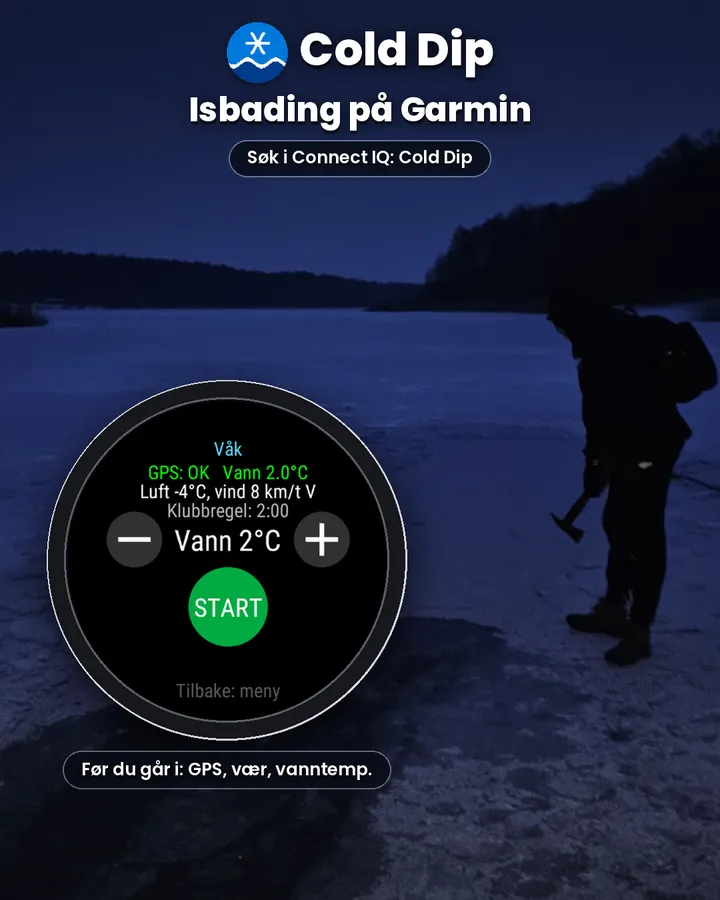
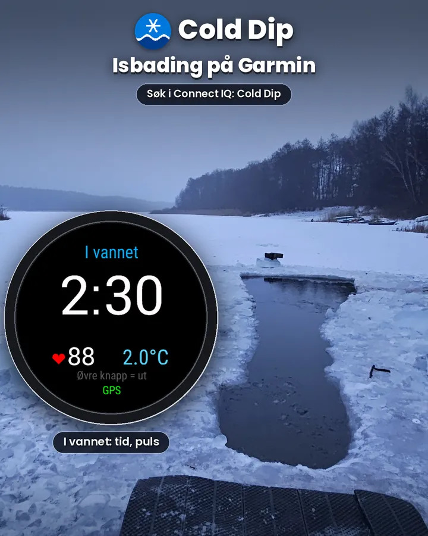
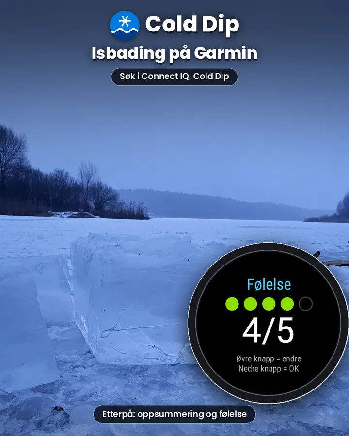
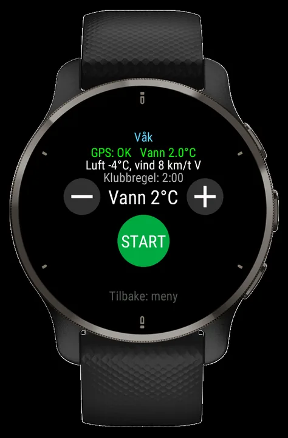
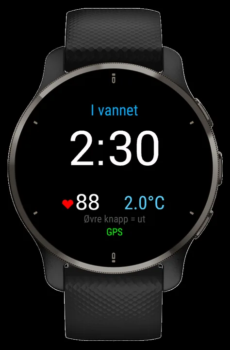

Før / i vannet / etter
Øverste knapp bytter fase. Tiden i vannet bare fortsetter å telle — appen sier aldri at du skal gå opp. Det bestemmer du. Forrige tid er bare et referansepunkt, ikke et mål du må slå.
På klokken heter appen Isbading.
Isbading og kalde bad lagret skikkelig — ikke som svømming.
5,0 i Connect IQ · 1000+ nedlastinger
Eller søk etter «Cold Dip» i Connect IQ-appen på telefonen.



Plattformer
Appen kan lastes ned på Garmin-klokker i dag. Amazfit-versjonen (Zepp OS) er til vurdering i Zepp App Store. Versjoner for Huawei, Wear OS og Apple Watch er på vei.
Laget for isbading, ikke for basseng. Du bestemmer hele tiden.
Øverste knapp bytter fase. Tiden i vannet bare fortsetter å telle — appen sier aldri at du skal gå opp. Det bestemmer du. Forrige tid er bare et referansepunkt, ikke et mål du må slå.
Pulsen lagres hele tiden. Vanntemperaturen skriver du inn manuelt, og den følger med i aktiviteten.
Lufttemperatur, følt temperatur og vind — fra Garmin-været på telefonen din.
Stedet du bader lagres og vises på kart i Garmin Connect.
Etter hvert bad en rask vurdering av hvordan du føler deg. I tillegg puls-topp og restitusjon, samt Body Battery og stress før du gikk uti.
Alt lagres i Garmin Connect som en egen aktivitet, ikke som svømming.
Engelsk, polsk, tysk, tsjekkisk, slovakisk, finsk, norsk, svensk, spansk, russisk og ukrainsk. Appen følger automatisk språket på klokken.
Forerunner, Fenix, Epix, Enduro, Venu, Vivoactive, Instinct 2 / 3 / E / Crossover og flere. Støttes ikke på svært gamle klokker som Forerunner 920XT (Connect IQ 1.x).
Valgfrie tillegg i den gratis appen — du betaler bare hvis du vil ha dem
Appen du allerede bruker, forblir gratis. Pro er for dem som vil ha mer ut av sesongen: nye måter å trene på, et tydeligere bilde av fremgangen og en enklere skjerm i vannet.
4,99 USD engangskjøp, pluss merverdiavgift der det gjelder · 7 dagers gratis prøveperiode
Prøv Pro gratis i 7 dager — deretter 4,99 USD Oppdater i Connect IQ
Badstue med klokken på håndleddet, kald dusj, veiledet kontrast av badstue og vann, eller en kort pusteøving før du går i. Du bekrefter alltid et fasebytte med knappen.
Navngitte etapper og varsler til tidene du velger, i tillegg til de gratis minutt-, halvtid- og 3-2-1-varslene som forblir som de er.
Samlet tid i vannet og i badstuen, flere rekorder og historikk på opptil 200 økter. Den gratis listen viser fortsatt de siste 30.
Hold en serie på 7, 14 eller 30 dager, og tjen merker for 10, 25, 50 og 100 økter, første bad under 5°C, en kontrastøkt og badstue pluss bad i samme økt.
En stor tidtaker, en side for puls og runder og temaer (is, mørk, høy kontrast, badstue). Bytt side med Opp og Ned.
Én stor tidtaker i vannet, vanntemperatur og puls. Én knapp for start og stopp. Ingen ekstra menyer eller skjermer. Du slår den på i innstillingene når Pro er låst opp.
Et foreslått tidspunkt ut fra vanntemperaturen, etter en vanlig klubbregel (omtrent like mange minutter som °C, mellom 0:30 og 5:00). Bare et tips: appen avslutter aldri økten og sier aldri at en tid er trygg.
På nyere klokker kan du feste et glance og komplikasjoner: dagsrekken, tiden på siste bad og sesongminutter. Glance er gratis der. Komplikasjoner trenger en urskive som støtter app-komplikasjoner.
Når du lagrer et bad, viser et enkelt kort tid, temperatur, følelse og rekke. Ta bilde av skjermen for å dele det. En historikkliste blir på klokken, og Garmin Connect får fortsatt FIT-aktiviteten. Ingen skyeksport eller Instagram-bilde — Connect IQ kan ikke sende bilder selv.
Etter badet ser du en enkel pulskurve, toppen og 1- og 2-minutters restitusjonsverdier. Bare et hint, ikke medisinsk råd.
Lagre et badested med siste vanntemperatur du registrerte der. Når du er i nærheten, kan startskjermen vise det besøket. Dette er ikke en live innsjøtemperatur — Connect IQ har ikke et slikt API.
Hvis du legger klokken utenfor så den ikke blir for varm, slå på valget: appen forventer ikke puls fra håndleddet i badstuen, og kan starte en oppvarmingsfase etterpå. Du kan også starte oppvarming etter vannet fra menyen.
| Hva som inngår | Gratis | Pro ⭐ PRO |
|---|---|---|
| Alt som allerede er i Cold Dip 1.0.3 — fire profiler, historikk på 30, rekorder, veiledet pust, GPS og mer | ✓ Ja | ✓ Ja |
| Badstue, kontrast og nye moduser ⭐ PRO | — | ✓ Ja |
| Egne alarmer i vannet ⭐ PRO | — | ✓ Ja |
| Se hele sesongen ⭐ PRO | — | ✓ Ja |
| Merker og daglige serier ⭐ PRO | — | ✓ Ja |
| Ekstra skjermer og fargetemaer ⭐ PRO | — | ✓ Ja |
| Enkel modus, laget for hansker ⭐ PRO | — | ✓ Ja |
| Et tidstips — ikke en grense ⭐ PRO | — | ✓ Ja |
| Glance og urskivekomplikasjoner (nyere klokker) | På nyere klokker | På nyere klokker |
| Øktkort og historikkliste ⭐ PRO | — | ✓ Ja |
| Puls- og restitusjonsgraf ⭐ PRO | — | ✓ Ja |
| Lagrede steder med siste vanntemperatur ⭐ PRO | — | ✓ Ja |
| Klokken utenfor badstuen og oppvarming ⭐ PRO | — | ✓ Ja |
| Pris | Gratis | 7 dagers prøveperiode, deretter 4,99 USD én gang |
Pro kjører på nyere Garmin-klokker med Connect IQ 4 eller nyere, blant annet Venu 2 / 3 / 4, Venu Sq 2, Venu X1, vívoactive 5 / 6, Forerunner 165 / 170 / 255 / 265 / 570 / 955 / 965 / 970, fēnix 7 / 8 / 9, epix (Gen 2), Instinct 3 AMOLED, Descent Mk3, Enduro 3 / 4, Approach S50 / S70 / S72 og MARQ (Gen 2) / (Gen 3). Den kjører ikke på eldre eller mer minnekrappe modeller som fēnix 5 / 6, den første Venu, vívoactive 3 / 4, Forerunner 55 / 245 / 645 / 945, Instinct 2, Instinct 3 Solar eller Instinct E — den gratis appen fungerer der fortsatt. Sjekk modellen din i listen.
I Garmin Connect lagres en badstueøkt som trening eller meditasjon, fordi Garmin ikke har aktivitetstypen «badstue».
Tidstipset er ikke medisinsk råd og betyr ikke at en økt er trygg. Kaldt vann og badstue innebærer risiko. Snakk med en lege, gå aldri alene og bruk eget skjønn. Du har kontrollen hele tiden.
Søk etter modellen din. Listen omfatter de 133 klokkene i Cold Dip.
Svært gamle klokker med Connect IQ 1.x, som Forerunner 920XT, kan ikke støttes. Pro trenger en nyere klokke — søk etter modellen din for å sjekke.
Urskiver
Hvalross-urskiver for isbading. Mors – tarcza endrer seg med været. Mors Level stiger med sesongminuttene dine. Dip Goals og Afterdrop kommer snart.


Animert hvalross-skive for isbading
3,99 USD 24 timers gratis prøveperiode
Kommer snart i Connect IQ Store Hent den i Connect IQ Les mer
Spillifisert hvalross-skive for isbading
2,99 USD 7 dagers gratis prøveperiode
Kommer snart i Connect IQ Store Hent den i Connect IQ Les mer

Målringer for ukentlige isbad, sesongminutter og rekke, pluss vann- og lufttemperatur, Body Battery og puls. Fire temaer.

En gratis Garmin-urskive med stor klokke og 3 felt. Den låses aldri. Valgfritt Afterdrop Pro låser opp Cold Dip-felt, lufttemperatur, soloppgang og solnedgang og 4 ekstra temaer.
Animert hvalross-skive for isbading
Hvalrossen reagerer på været: bølger i fint vær, lue i frost, rister av seg snøen og hopper i ishullet når det er isbadevær. Tid, dato, lufttemperatur, vær, puls, skritt og batteri. Animasjonen spilles når du vekker klokken — aldri i always-on-modus.
3,99 USD engangskjøp, pluss merverdiavgift der det gjelder
På AMOLED-klokker beveger hvalrossen seg når du løfter håndleddet — aldri i always-on-modus.
Fargerik animasjon på AMOLED-klokker som Venu 2, 2 Plus, 3 og 4, vívoactive 5 og 6, Forerunner 165, 170, 265, 570, 965 og 970, Fenix 8 og 9 (AMOLED), Epix 2, Descent Mk3, D2 Mach, Approach S70 og S72, Instinct 3 AMOLED og MARQ 2 og 3.
Denne skiven er ikke tilgjengelig på MIP-klokker og modeller med mindre minne, som Fenix 5 Plus, Fenix 6 og 7, Fenix Solar, Forerunner 245, 255, 745, 945 og 955, Enduro, Descent Mk2, vívoactive 4, Venu 1 og første generasjon MARQ. Disse skjermene kan ikke vise den fargerike animasjonen.
Spillifisert hvalross-skive for isbading
Hvalrossen din stiger gjennom 5 nivåer etter hvert som sesongens kaldtvannsminutter vokser — live fra den gratis appen Cold Dip. Om vinteren et rykende ishull, om sommeren en strand, merke for badrekke, vanntemperatur, puls, batteri og en ren always-on-skjerm. Vekkeanimasjonen spilles når du vekker klokken — aldri i always-on-modus.
2,99 USD engangskjøp, pluss merverdiavgift der det gjelder · 7 dagers gratis prøveperiode
For å stige i nivå med live minutter, badrekke og vanntemperatur, installer den gratis appen Cold Dip. Uten den viser disse feltene bare klokkedata.
NYBEGYNNER 1/5


5 nivåer
1/5
0–29 min denne sesongen
2/5
30–119 min denne sesongen
3/5
120–299 min denne sesongen
4/5
300–599 min denne sesongen
5/5
600+ min denne sesongen


Fullfargeanimasjon på 51 AMOLED-klokker som Venu 2, 2 Plus, 3 og 4, vívoactive 5 og 6, Forerunner 165, 170, 265, 570, 965 og 970, Fenix 8 og 9 (AMOLED), Epix 2, Descent Mk3, D2 Mach, Approach S70 og S72, Instinct 3 AMOLED og MARQ 2 og 3. Always-on bruker svært få lysende piksler.
En tydelig, statisk skive på 19 MIP-klokker som Fenix 7, Fenix 8 Solar, Forerunner 255 og 955, og Enduro 3 og 4. Til sammen støtter Mors Level 70 Garmin-klokker, på 11 språk.
Gjennomsnitt 5,0 ★ i Connect IQ Store og over 1000 nedlastinger.
★★★★★
„Super, pierwsze morsowanie z apką za mną, działa! Tego mi było trzeba! Dzięki”
Supert, mitt første isbad med appen er unnagjort, den virker! Akkurat det jeg trengte! Takk (Oversatt fra polsk)
★★★★★
„Rewelacyjna apka. Przetestowana podczas morsowania. Wszystko działa dobrze”
Fantastisk app. Testet under isbading. Alt fungerer bra (Oversatt fra polsk)
★★★★★
„Działa nawet na starszym Garminie za co duże brawa dla autora”
Virker til og med på en eldre Garmin — stor applaus til utvikleren (Oversatt fra polsk)
★★★★★
„Świetna sprawa!💙”
Kjempebra!💙 (Oversatt fra polsk)
Ett bad fra start til lagring — ekte skjermer fra Garmin-simulatoren.



De siste versjonene av Cold Dip.
Vanntemperaturen du legger inn etter badet gjelder nå bare for den økten. Spørsmålet ignorerer et utilsiktet knappetrykk rett etter at du går opp. Mer robust: full minne eller en lagringsfeil fryser ikke lenger appen, og et felt eller en sport som ikke støttes på en eldre klokke stopper ikke lenger starten. Rettet polske og russiske oppvarmingstips.
Rettet et krasj ca. 20 s etter lagring (rapportert på Venu 3S). Etter badet spør klokken om vanntemperaturen; gratis og kan slås av i innstillingene.
Cold Dip Pro er her. Alt fra 1.0.3 forblir gratis. Pro er valgfritt: 4,99 USD én gang, med 7 dagers gratis prøveperiode. Nye modi: badstue, kald dusj, veiledet kontrast og pusteøving; egne alarmer og navngitte etapper i vannet; sesongstatistikk, merker og dagsrekker (7 / 14 / 30); ekstra skjermer, fargetemaer og enkel modus.
133 klokker, inkludert Instinct 2, Instinct 2S, Instinct 2X, Instinct 3 Solar, Instinct E og Instinct Crossover, pluss en ny svart-hvitt-layout for MIP-skjermer.
126 klokker, inkludert Forerunner 55.
105 klokker, inkludert rektangulære layout for Venu X1 og Venu Sq 2.
Første utgave.
“Działa idealnie” (Fungerer perfekt)
Over 10 minutter ved 5°C — vanntemperatur på klokken, og alle data lagret i Garmin Connect.
Noen ting folk ofte spør om etter installasjon.
Installer den fra Connect IQ Store-appen på telefonen — ikke fra Google Play eller App Store. På klokken finner du Cold Dip (Isbading) i listen over aktiviteter / apper.
I profilen «Våk» stiller du den inn med knappene − / + på startskjermen. I andre profiler gjøres det fra menyen: «Vanntemp. manuelt». Hvis du ser «--°C» i vannet, er temperaturen ikke satt ennå.
Åpne aktiviteten, gå til fanen «Statistikk» og rull ned til delen «Connect IQ». Der finner du puls, vanntemperatur, vær, følelse og tidene i hver fase. Rutene på «Oversikt»-skjermen settes av Garmin — appen kan ikke endre dem.
Nei. Klokken kan ikke måle kroppstemperatur. Sensoren viser temperaturen til selve klokken, som påvirkes av huden og luften. I Cold Dip skriver du inn vanntemperaturen manuelt.
Kaloriene anslås av klokken ut fra pulsen, de beregnes ikke av Cold Dip.
Ja. Opptaket skjer på klokken, så telefonen kan bli i bagen. Uten telefon mister du bare været, siden det kommer fra Garmin-været på telefonen. Aktiviteten synkroniseres til Garmin Connect neste gang klokken kobler seg til telefonen. Telefonen trenger du for å installere appen og låse opp Pro.
Klokken kan ikke måle vanntemperaturen selv — sensoren måler klokken, som varmes av huden og luften. I Cold Dip stiller du inn vanntemperaturen med − / + (eller i menyen), og etter at du går opp, spør appen om den. Har du en paret Garmin Tempe-sensor, bruker appen målingen fra den. Klokkesensoren og lufttemperaturen blir aldri vist som vanntemperatur.
Pro er valgfritt, og appen forblir gratis. Pro gir badstue, kald dusj, veiledet kontrast og pusteforberedelse, egne alarmer, sesongstatistikk, merker og daglige rekker, ekstra skjermer og temaer, en enkel modus som fungerer med hansker, et tidshint etter vanntemperatur (et hint, aldri en grense) og en pulsgraf. Engangspris 4,99 USD etter 7 dagers gratis prøveperiode. Se alle Pro-funksjoner.
Betalingen går gjennom KiezelPay. Når du vil beholde Pro, viser klokken en 6-sifret kode. Skriv den inn på kzl.io/cold-dip-pro (for betalte urskiver: kzl.io/code) og betal én gang. Ha telefonen i nærheten med Garmin Connect og Bluetooth på — klokken låses opp via den forbindelsen, vanligvis innen 5 minutter.
Over 130 Garmin-klokker med Connect IQ: Forerunner, fēnix, epix, Enduro, Venu, vívoactive, Instinct 2 / 3 / E / Crossover med flere. Pro krever Connect IQ 4 eller nyere. Svært gamle modeller som Forerunner 920XT støttes ikke. Sjekk modellen din.
En versjon for Amazfit (Zepp OS) er klar og venter på godkjenning i Zepp App Store. Versjoner for Huawei, Wear OS (Samsung Galaxy Watch, Pixel Watch) og Apple Watch er under arbeid — ingen datoer ennå. Få beskjed.
Kaldt vann er alvor. Dette er generelle sikkerhetspåminnelser, ikke medisinske råd. Du bestemmer når du går i og når du går opp.
Gå alltid sammen med noen som kan hjelpe hvis noe skjer, eller sørg for at noen på land følger med på deg.
Hvis du er ny i kaldt vann, venner du deg til det over tid i stedet for å starte med et langt bad i svært kaldt vann.
Mange starter med bare kort tid i vannet og øker sakte. Det finnes ingen tid du «skal» holde ut.
Forlat vannet så snart du kjenner at du burde — kraftig skjelving, smerte, nummenhet, forvirring, eller bare en følelse av at det er nok. Cold Dip sier aldri at du skal gå opp, og setter aldri en mål-tid. Forrige tid er bare et referansepunkt.
Tørk deg og varm deg så snart du kan etter at du har gått opp. Ha varme klær klare før du går i.
Etter at du har gått opp, kan kjernetemperaturen fortsette å synke en stund mens kaldere blod kommer tilbake fra hud og armer og bein. Dette kalles ofte afterdrop. Fortsett å varme deg, ta det rolig, og vent til du føler deg bra før du kjører eller sykler.
Cold Dip er en registreringsapp, ikke et medisinsk utstyr, og gir ikke medisinske råd. Den kan ikke si om det er trygt for deg å gå i kaldt vann. Har du en helsetilstand, er du gravid, eller er du usikker, snakk først med en kvalifisert fagperson.
Korte, praktiske tekster fra en isbader. Generelle tips, ikke medisinske råd.
En populær klubbtommelfingerregel etter vanntemperatur — og hvorfor den ikke er en trygg grense.
Hvorfor du kan bli kaldere etter at du har gått opp, og hvordan du varmer deg rolig.
De første badene steg for steg: selskap, korte tider, varme klær klare.
Et kort blikk på ett bad, fra startskjermen til lagringen i Garmin Connect.
Cold Dip kommer til flere klokker. Velg din: e-postappen åpnes med ferdig emne, du trenger bare å trykke send. Jeg svarer én gang når den versjonen er klar.
Ingen nyhetsbrev og ingen sporing — bare én e-post fra meg. · lukasz.pszenny@gmail.com
Driver du en isbadegruppe, klubb eller side? Del gjerne Cold Dip med medlemmene. Appen er gratis, og grafikken og teksten under er klare til å legges ut.
Har du en idé til en Garmin-app eller en klokkeskjerm? La oss lage den sammen. Skriv til meg og fortell hvilken klokke du bruker.
Hvis du allerede bruker Cold Dip, hjelper en omtale i Connect IQ mye — takk!
Cold Dip er gratis. Hvis den hjelper på badene dine, kan du støtte arbeidet bak den.
Spander en kaffe